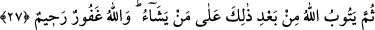

ve mallarının bulunduğu Evtâs’ta konakladılar. Rasûlullah (s.a.), Eş‘arîler kabilesinden
Ebû Amr’ın komutasında bir orduyu Evtâs’a gönderdi. Ebû Amr, Evtâs’a varıp onlarla
savaştı. Allah, müşrikleri hezimete uğrattı, müslümanlar onların ailelerini esir aldılar.
Komutanları Mâlik b. Avf, kaçıp Tâif’e gitti ve oraya sığındı, ailesi ve malı
müslümanlar tarafından alındı. Savaşta müminlerin komutanı Ebû Amr da şehid edildi.
Daha sonra Peygamber (a.s.) Tâif’e gitti ve bu ayın sonuna kadar Tâif’i muhasara etti.
Haram aylardan olan Zülkâde girince muhasarayı kaldırıp Mekke ile Medine arasında
bulunan Ci‘râne’ye gitti.
Aslında Ci’râne, Rayta binti Sa‘d adlı bir kadının lakabıdır. Bu lakap bu yere isim
olarak verilmiştir. “...ipliğini kuvvetli büktükten sonra çözen kadın gibi...” (en-Nahl,
16/92) âyetinde kasdedilen kadın, bu kadındır.
Peygamber Efendimiz burada on üç gece kaldıktan sonra umre için ihrama girdi ve:
“Buradan (ihrama girip) yetmiş peygamber umre yapmıştır.” buyurdu.
Huneyn ve Evtâs ganimetlerini burada dağıttı. Altı bin esir, yirmi dört bin deve, kırk
binden fazla koyun ve dört bin ukıyye gümüş ganimet olarak alınmıştı. Peygamber
Efendimiz, bazı insanları İslâma ısındırmak için onlara kişi başına 150 deve verdi.
Geriye kalanları dağıtınca kişi başına 4 deve ve kırk koyun düştü. Bunun üzerine
Ensâr’dan bir grup: “Hayret! Bizim kılıçlarımızdan (hâlâ) onların kanları damlıyor,
ganimetlerimiz ise onlara veriliyor.” dediler.
Bu söz Hz. Peygamber (a.s.)’a ulaşınca, onları topladı ve: “Ey Ensâr topluluğu! Bana
sizin hakkınızda ulaşan şey de nedir?” diye sordu.
“–Sana ne ulaşmışsa doğrudur.” cevabını verdiler, söylediklerini yalanlamıyorlardı.
Peygamber Efendimiz:
“–Siz daha önce dalâlette idiniz de Allah size benim sayemde hidayet vermedi mi?
Hor ve hakir idiniz de Allah sizi benim sayemde üstün kılmadı mı? Şöyle şöyle idiniz
de şöyle şöyle olmadı mı?!... Bu insanlar koyun ve develerle evlerine dönerken, siz
Allah’ın Rasûlü ile dönmek istemez misiniz?” buyurunca Ensâr:
“–Elbette isteriz ey Allah’ın Elçisi, Allah’a yemin olsun ki biz o sözü yalnızca
Allah’a ve Rasûlü’ne olan sevgimizden ötürü söyledik.” cevabını verdiler. Peygamber
Efendimiz de:
“–Allah ve Rasûlü sizi tasdik ediyor, mazur görüp bağışlıyor.” buyurdu.[119]
27. Sonra Allah, bunun ardından yine dilediğinin tevbesini kabul eder. Allah
bağışlayandır, esirgeyendir.
“Sonra Allah, bunun” bu savaşın “ardından yine” hikmetinin gerektirdiği şekilde
tevbesini kabul etmeyi “dilediğinin tevbesini kabul eder.” yani o kimseyi müslüman